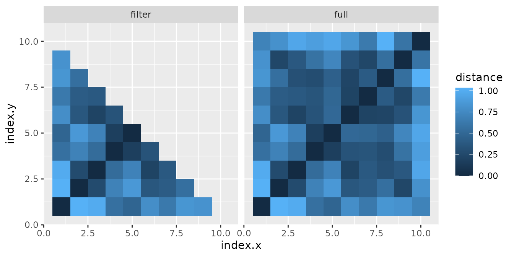

This vignette shows how to switch from matrices to dataframes and vice versa.
There are many ways to achieve the same result in programming and thereafter there is nothing that cannot be done through operations on matrices. However, for data manipulation, the dataframe can be a more comfortable structure to work on.
pileMatrix()
There are some operations, such as covariance, which return a matrix
as a result. Wanting to represent covariance via ggplot2
can be tricky if you don’t use auxiliary packages.
One possibility is to use the reshape2 package’s melt function, but
if you want only a part of the matrix then additional operations such as
upper.tri() or similar are required.
The pileMatrix() function simplifies these operations;
it works similarly to the reshape2::melt() function,
however, while not performing as melt, it allows you to
easily choose the parts of interest of the matrix.
We define a square test matrix
(mat1 <- matrix(1:64, nrow = 8, byrow = TRUE))
#> [,1] [,2] [,3] [,4] [,5] [,6] [,7] [,8]
#> [1,] 1 2 3 4 5 6 7 8
#> [2,] 9 10 11 12 13 14 15 16
#> [3,] 17 18 19 20 21 22 23 24
#> [4,] 25 26 27 28 29 30 31 32
#> [5,] 33 34 35 36 37 38 39 40
#> [6,] 41 42 43 44 45 46 47 48
#> [7,] 49 50 51 52 53 54 55 56
#> [8,] 57 58 59 60 61 62 63 64Using pileMatrix() we obtain a dataframe of three
columns, where the first two indicate the row and column of the matrix,
while the third indicates the value of the matrix element
head(pileMatrix(mat1))
#> row col value
#> 1 1 1 1
#> 2 2 1 9
#> 3 3 1 17
#> 4 4 1 25
#> 5 5 1 33
#> 6 6 1 41It is possible which part of the matrix to stack by choosing between:
-
"full": the whole matrix (default), -
"u": upper triangular matrix without diagonal, -
"ud": upper trinagular matrix with diagonal, -
"l": lower triangular matrix without diagonal, -
"ld": lower triangular matrix with diagonal, -
"d": only the diagonal
head(pileMatrix(mat1, subset = "u"))
#> row col value
#> 1 1 2 2
#> 2 1 3 3
#> 3 2 3 11
#> 4 1 4 4
#> 5 2 4 12
#> 6 3 4 20
pileMatrix(mat1, subset = "d")
#> row col value
#> 1 1 1 1
#> 2 2 2 10
#> 3 3 3 19
#> 4 4 4 28
#> 5 5 5 37
#> 6 6 6 46
#> 7 7 7 55
#> 8 8 8 64getTriang()
The purpose of getTriang() is to filter parts of a
dataframe when inside a workflow.
We consider a dataframe of points and calculate the distances by all
pairs of points. If you define intermediate variables, you can proceed
in any way, including a for loop. But let’s see how to proceed with
getTriang()
(df1 <- data.frame(x = runif(10), y = runif(10), index = 1:10))
#> x y index
#> 1 0.080750138 0.87460066 1
#> 2 0.834333037 0.17494063 2
#> 3 0.600760886 0.03424133 3
#> 4 0.157208442 0.32038573 4
#> 5 0.007399441 0.40232824 5
#> 6 0.466393497 0.19566983 6
#> 7 0.497777389 0.40353812 7
#> 8 0.289767245 0.06366146 8
#> 9 0.732881987 0.38870131 9
#> 10 0.772521511 0.97554784 10
head(merge(x = df1, y = df1, by = NULL))
#> x.x y.x index.x x.y y.y index.y
#> 1 0.080750138 0.87460066 1 0.08075014 0.8746007 1
#> 2 0.834333037 0.17494063 2 0.08075014 0.8746007 1
#> 3 0.600760886 0.03424133 3 0.08075014 0.8746007 1
#> 4 0.157208442 0.32038573 4 0.08075014 0.8746007 1
#> 5 0.007399441 0.40232824 5 0.08075014 0.8746007 1
#> 6 0.466393497 0.19566983 6 0.08075014 0.8746007 1The merge() function returns all possible pairs, but the
distance of a point with itself does not matter because it is always
zero and furthermore the distance between points
is the same between
,
so we want to discard the repetitions.
We can do this with getTriang() which given the number
of cells of a square matrix (in fact the dataframe we are using can be
seen as a square matrix) returns the indices of the desired matrix
elements; in particular, you can choose the upper or lower part of the
matrix, with or without diagonal, in the main direction or in the
mirrored direction; moreover it is possible to choose the direction in
which the elements of the matrix are reported (i.e. increasing the
("h") or the
("v") faster), for a total of 16 possibilities.
For clarity we calculate all distances and then filter only those of the lower part without diagonal, but to perform fewer calculations it would be better to filter first.
df_merge <- merge(x = df1, y = df1, by = NULL)
# calculate distance
df_merge$distance <- sqrt((df_merge$x.x - df_merge$x.y)^2 + (df_merge$y.x - df_merge$y.y)^2)
# define lower triangular matrix index without diagonal
lower_ndx <- getTriang(nrow(df_merge), diag = FALSE, part = "lower")
# filter df_merge
df_merge_filter <- df_merge[lower_ndx, ]
# join dataframe to representation
df_full <- data.frame(rbind(df_merge, df_merge_filter))
df_full$group <- c(rep("full", nrow(df_merge)), rep("filter", nrow(df_merge_filter)))
ggplot(df_full) +
geom_tile(aes(x = index.x, y = index.y, fill = distance)) +
facet_wrap(~group)
Due to how R counts matrix elements and how we set up
the indices, we see that we have not selected the right part. What we
need is the lower part, but in the mirrored direction
# define mirrored lower triangular matrix index without diagonal
lower_mir_ndx <- getTriang(nrow(df_merge), diag = FALSE, part = "lower", mirror = TRUE)
# filter df_merge
df_merge_filter <- df_merge[lower_mir_ndx, ]
# join dataframe to representation
df_full <- data.frame(rbind(df_merge, df_merge_filter))
df_full$group <- c(rep("full", nrow(df_merge)), rep("filter", nrow(df_merge_filter)))
ggplot(df_full) +
geom_tile(aes(x = index.x, y = index.y, fill = distance)) +
facet_wrap(~group)